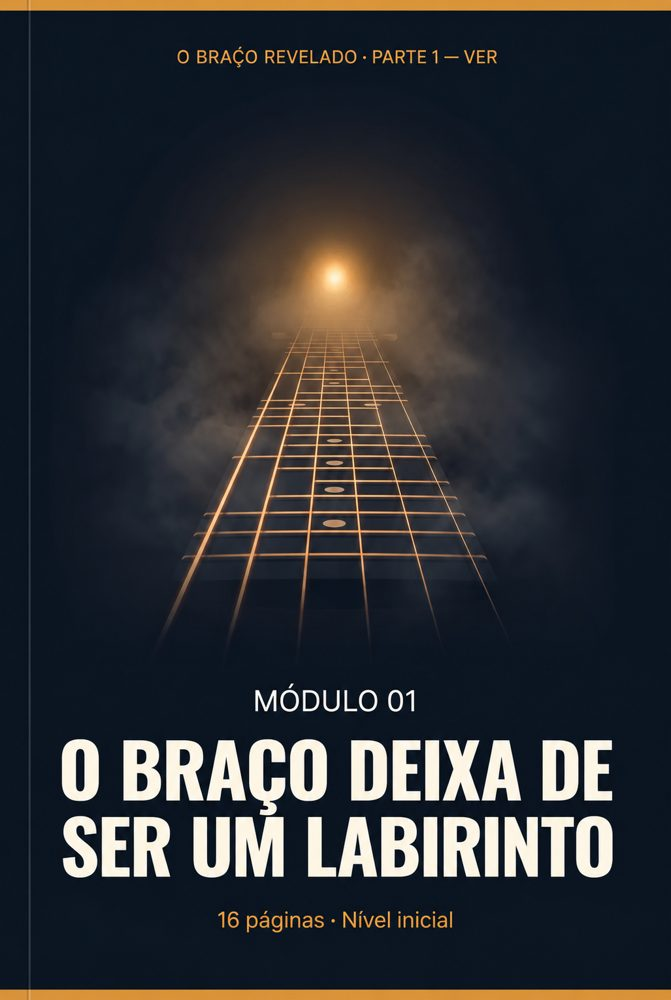
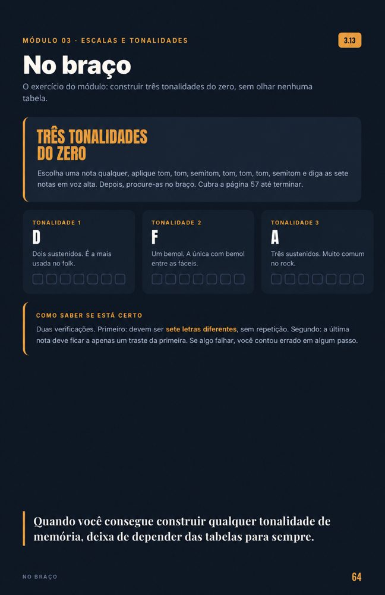

Sem partitura, sem conservatório e sem decorar formas
O sistema visual que transforma o braço do violão de mistério em mapa, para você servir no ministério com segurança.
Você toca no culto todo domingo. O que você não sabe é por que o que você toca funciona. Essa é a barreira.
Os livros de teoria foram escritos por pianistas de conservatório, para alunos de conservatório. Partiam do princípio de que você sabia ler partitura. Exigiam que você decorasse dezenas de escalas antes de deixar você tocar um louvor.
A informação não estava errada.
O jeito de ensinar é que estava.
“A teoria faz sentido quando você para de tentar decorar e começa a vê-la desenhada no braço do violão.”
Três princípios para que, desta vez, tudo faça sentido.
Sem versão reduzida e sem nada para comprar depois. O que você vê abaixo é tudo o que está incluído.
OFERTA DE LANÇAMENTOProduto digital em PDF: o download é imediato. Pagamento por Pix ou cartão de crédito.
Cada módulo se apoia no anterior. Todos têm diagramas visuais, uma folha de consulta rápida, um glossário em linguagem simples e exercícios de autoavaliação. Toque em um módulo para ver o conteúdo.
Encontre qualquer nota em segundos, sem decorar, a partir de três pontos de referência.
Entenda por que um acorde soa alegre, triste ou tenso, vendo as distâncias como formas.
Monte as doze escalas maiores com uma fórmula só.
Sete cores da mesma escala, cada uma com a sua nota-chave.
Tríades e campo harmônico: o mapa de qualquer louvor.
7, 7M, m7, 9, sus: os acordes que dão aquele som de ministério.
O mesmo acorde em cinco lugares. O braço deixa de ter ilhas.
Graus e números romanos: descreva qualquer louvor sem nomear uma nota.
Troque o tom na hora em que o ministro pedir.
Pentatônica e notas do acorde para preencher a ministração.
Tire louvores sem cifra e escreva os seus próprios cânticos.
Estas são páginas reais do livro, sem retoques.

Cada módulo começa com sua capa e ficha técnica.
As três âncoras: como achar qualquer nota sem decorar.
O mapa do braço: as sete letras, casa por casa.
Os sete modos lado a lado, cada um com sua nota-chave.
O braço inteiro conectado pelas cinco formas do CAGED.

Exercícios “No braço” para provar no instrumento.
Folha de dicas: o construtor de acordes, para imprimir.
O livro entrega o sistema. Os bônus fazem ele funcionar no dia a dia. Separados, valem R$ 145; hoje, estão incluídos.
Não é acumular mais informação. É como você vai viver o violão e o ministério daqui para frente.
O livro entrega o sistema. Os bônus fazem ele funcionar.
No YouTube há milhares de vídeos soltos, cada um ensinando uma forma. Aqui cada módulo se apoia no anterior: em vez de vinte peças avulsas, você fica com o mapa completo, desenhado no braço do violão.
Não. O livro começa pelo nome das notas. E cada módulo abre com um teste rápido, para quem já sabe pular o que já domina.
Porque o problema provavelmente não era você. Os livros tradicionais partem da partitura e pedem para decorar antes de tocar. Aqui tudo é visual, no braço, com exercícios que você confere sozinho.
Não. Tudo está em diagramas do braço e em cifra, do jeito que você já usa na igreja.
Sim. O braço, as notas, os acordes e as escalas são os mesmos nos dois instrumentos.
[Responder conforme o que o livro cobre.]
O plano de estudo é de 30 dias. O livro é seu para sempre, então você pode ir no seu ritmo.
Assim que o pagamento é confirmado, o link de download chega no seu e-mail. Se não aparecer em 10 minutos, olhe o spam ou fale com a gente.
Sim. São PDFs prontos para impressão, e as folhas de consulta e o pôster vêm em alta resolução.
O sistema visual para quem já toca no louvor e quer, finalmente, entender o que está tocando.
🎸 Quero entender o braço →